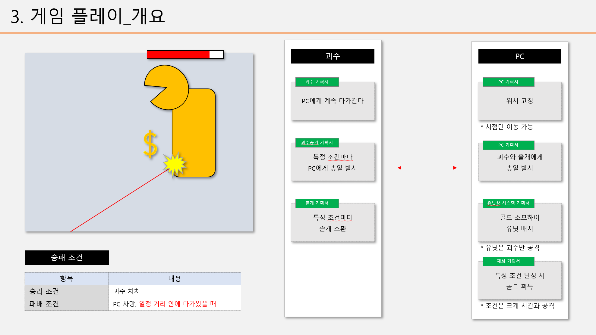

게임기획 스터디 · 2023.10
슈팅 디펜스 게임 《돌펜스: 골렘막기》
세계 유일의 대마법사 ‘돌펜스’가 되어 세계수를 파괴하기 위해 다가오는 거대 골렘을 물리치는 VR 슈터 디펜스 게임입니다. 프로그래머와 팀을 결성하여 첫 합을 맞추기 위한 작은 프로젝트였으며, 짧은 개발기간에도 불구하고 장르적인 재미 또한 갖춘 게임이 되었습니다.
- 기간
- 2023.10.04 — 2023.10.27
17일, 주말 제외 - 역할
- 기획팀장 · 시스템 기획 · 컨텐츠 기획 · 밸런싱
- 엔진
- Unity 2021.3.27f1 · Git
- 플랫폼
- VR — PC
플레이 영상 (패배 시)
01
게임 소개
위대한 대마법사 돌펜스여, 세계수로 다가오는 골렘을 막고 세계를 구하여라!
약 2주 간의 짧은 기간을 설정하여 신속하게 개발했습니다.
1인칭 슈터디펜스VR
02
담당 업무
01기획 팀장
게임 방향 설정
- 제안서 작성을 통해 프로젝트의 방향과 구조를 설명
협업 툴 세팅
- Notion
02시스템 기획
게임 전체 플로우 제시
- 게임 Flow 기획서를 통해 게임의 전체적인 플레이 구조 및 UI/UX 설명

03컨텐츠 기획
화염탄 유닛
- 투사체가 이리저리 튕겨나가는 코믹한 디펜스 유닛 기획
<!-- GIF 속 화염탄 유닛의 특징 -->
화염 콜라이더가 발생하는 조건을
바닥에 한정하는 것으로 골렘을 향해
발사된 Projectile이 불규칙하게
튕겨나오며 재미있는 그림이 나왔다.04밸런싱
전투 밸런스
- 게임 플레이 시간을 3~5분으로 설정
재화 밸런스
- 적정한 난이도에 맞춰 PC 획득 골드량과 상점 가격 조정
- 긴장감 있는 플레이 구현을 위해 PC, 미니언, 보스 스탯 조정
03
인원 구성
기획
김현택 / 기획 팀장
김정훈 / PM
김지영 / 팀원
프로그래밍
윤지환 / 프로그래밍 팀장
최진성 / 메인
최승규 / 서브
진영수 / 서브